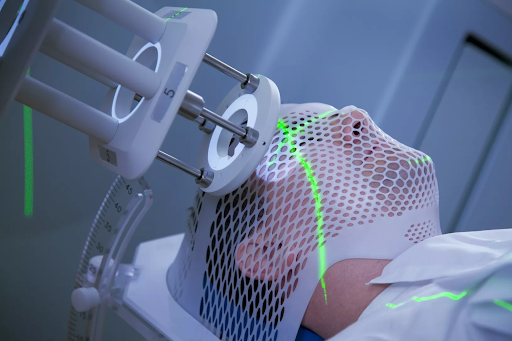

-->

Dosimetrist
- Salary Info - Dosimetrists earn between $81,000 and $112,000.
- Job Availability - “The Bureau of Labor Statistics anticipates that employment will grow 14% between 2014 and 2024, much faster than the average for all occupations, for radiation therapists, which includes medical dosimetrists.”
- Education Requirement - Dosimetrists need at least a bachelor’s degree and often a master’s in medical dosimetry. In addition, they must also pass a certification exam, interview and observation to become a fully licensed medical dosimetrist.
Go Back